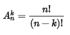

<!DOCTYPE html>
<html>
<body>
<script language="javascript">

function arrang(x,y)
{
if(x==0)
{return 1}
else
{return y*arrang(x-1,y-1)}
}

do {
x=prompt ("saisir l'entier superieur")

}while (isNaN(x)==true||x<0)
x=Number(x)
do {
y=prompt ("saisir un l'entier inferieur")

}while (isNaN(y)==true||y<0)
y=Number(y)
alert(arrang(x,y))
</script>

</body>

</html>

<!doctype html > 
<html>
<head>
<meta charset="utf-8" />
<title>Arrangement</title>
<link rel="stylesheet" href="style.css" />
<style>

body {
    font-family: 'Handlee', cursive;
    font-size: 13pt;
    background-color: #efefef;
    padding: 10px;
    margin: 0;
	
	background-size: cover;
}
h1 {text-align:center; color:white; font-family:verdana;}
spam{color:red;}
</style>
</head>
<body>
<header>  
  <h1 color="white">Mattard<sub class="c2">we just help you to do some quick Maths </sub> </h1>

</header>
<nav class="c1"> 
<nav class="c1"> 
<ul id="navigation">
 <li> <a href="test1.html">Accueil</a> </li>
 <li> <a href="Arrangement.html">Arrangemet</a> </li>
 <li> <a href="dfp.html">décompostion en facteur premier</a> </li>
 <li> <a href="nombrepremier.html">nombre premier</a> </li>
  <li> <a href="ppcm.html">ppcm</a> </li>
   <li> <a href="pgcd.html">pgcd</a> </li>
   <li> <a href="Puissance.html">puissance</a> </li>
   <li> <a href="Combinaison.html">Combinaison</a></li>
   <li> <a href="fact.html">factorielle</a></li>
</ul>
</nav>  
<hr size="6" color="#3366ff" width="100%">
<br>
<br>


<h1><spam>Arrangement</spam></h1>

<section> 
  <div id="c3">
  <fieldset >
     <legend>Définition</legend>
<p>En mathématiques, l'arrangement fait partie de l'analyse de dénombrement (ou combinatoire) et est utilisée, entre autres, dans le calcul de probabilité.
<br>
Lorsque nous choisissons k objets parmi n objets et que l’ordre dans lequel les objets sont sélectionnés revêt une importance,
<br>
 nous pouvons les représenter par un k-uplet d'éléments distincts et on en constitue une liste ordonnée sans répétition possible, 
 <br>
 c'est-à-dire dans laquelle l'ordre des éléments est pris en compte (si l'on permute deux éléments de la liste,
 <br>
 on a une liste différente, et un élément ne peut être présent qu'une seule fois).</p>
</fieldset>
  <fieldset >
<legend> Exemple</legend>
<a href= "Arrangement1.html"> </a>
<p>
À un examen, cinq candidats tirent les uns après les autres un sujet dans une urne contenant des questions toutes différentes.
<br>
Le premier tirage se fera sur un ensemble de 50 questions possibles. À chaque tirage suivant, la question qui vient d'être tirée est enlevée de l'urne.
<br>
 Ainsi, en faisant passer les cinq candidats, le tirage se fait d'abord sur 50, puis sur 49, et ainsi de suite jusqu'à 46 qui représente l'ensemble des questions restantes dans l'urne avant le dernier tirage.
 <br>
 Le nombre d'arrangements pour cette série de 5 questions prises parmi 50 est alors 50 × 49 × 48 × 47 × 46.
 <br>
 <h1><span>vous pouver esseyer  l'Arrangement en cliquant sur limage</span></h1>
 </p> 


</div>

</p>
</body>
</html>